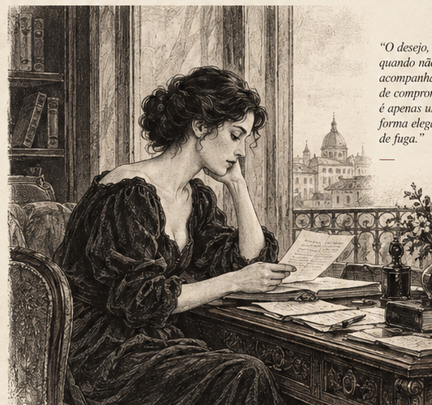
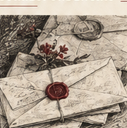

Da curiosa tendência masculina de desejar aquilo que não pretende sustentar
Eles admiram, cortejam, idealizam. Falam em parceria, liberdade, mulheres fortes. Mas, quando a vida real se impõe — com rotina, autonomia e ambição —, recuam. Por que tantos homens desejam justamente aquilo que não estão dispostos a sustentar?
Abrir o caso →

“Ele dizia admirar minha independência, até perceber que ela não o colocava no centro da minha vida.”
Dilemas contemporâneos. A intimidade em primeira pessoa.
O que ainda esperamos dos homens?
Quatro pensadores, quatro épocas, um mesmo problema. Um debate sobre desejo, responsabilidade, liberdade e a persistente arte de se decepcionar.
Ler a sessão →Jane Austen
Sobre a arte de escolher com lucidez.
Oscar Wilde
Sobre o desejo e suas máscaras.
Machado de Assis
Sobre a sinceridade dos afetos.
Virginia Woolf
Sobre liberdade e vida própria.
Os nomes integram uma curadoria provisória. As falas são ficção original, não citações históricas.
A anatomia do desaparecimento
Sobre ausências, silêncios e o fim sem explicações.
Sobre o inconveniente de mulheres independentes
Por que a autonomia ainda causa desconforto?
Pensadores mortos. Dilemas eternos.
Este periódico existe porque algumas perguntas permanecem as mesmas, mesmo quando o mundo muda. Seus colaboradores históricos são vozes ficcionalizadas; seus argumentos são convites ao pensamento, não sentenças definitivas.
Editoria-chefe: personagem original em desenvolvimento.
Conselho: formação provisória.
Volume I: laboratório editorial, 2026.